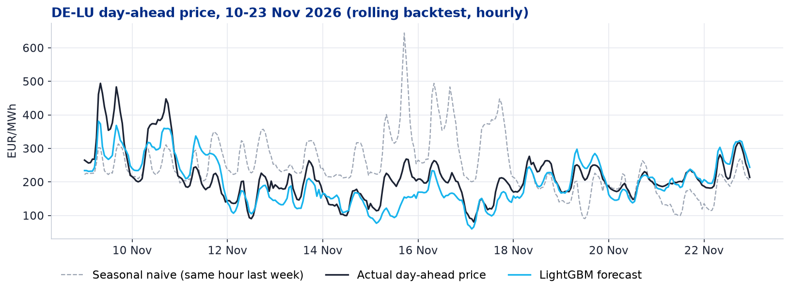

Machine learning engineer · Dresden
Two years of ML in industry: a vision model in production with Micron Technology, ML running on-site in customer fabs, and LLM agents for chip manufacturing. M.Sc. at TU Dresden, November 2026.
| 5 releasesin production | Wafer defect detectionKLA, with Micron Technology Label-free autoencoder that flags defective CD-SEM images and groups them by likely root cause, running on customers' CPU-only fab hardware. |
| On-siteair-gapped | LLM agents for lithography (aiLITHO)KLA Tools, document ingestion and evaluation for an agent platform engineers use to query manufacturing data. Self-hosted LLM on vLLM, MLflow tracing, LLM-as-judge. |
| 55.2%vs 34.5%, 310 bugs | Diffusion vs autoregressive code repairM.Sc. thesis, ScaDS.AI A 7B code model adapted twice at matched compute on H100s. Diffusion only wins when it is given edit locations and fix lengths; without the lengths, AR leads. |
| 98%top-1, sub-second | Surgical video retrievalNCT Dresden · code Finds the source video and timestamp of one surgical frame across 80 videos. |
| 12→44%phase F1 | Surgical video-language pretrainingNCT Dresden Reproduced narration-supervised pretraining from scratch on 94,094 clip-caption pairs. A filtered 64,962 beat the full set, and a temporal model on the frozen features nearly quadrupled phase F1. |
| −55%error vs naive | Day-ahead power price forecaster2026 rebuild of my NAECO Blue forecasting work German day-ahead price forecasts from public grid data, with DST-safe features, a 56-day rolling backtest and an MLflow model registry with a promotion gate. LightGBM error 35.3 vs 78.7 EUR/MWh for the seasonal naive baseline.  |
| 92.9%mutants killed | TestForgeAn agent that writes and repairs pytest suites for untested Python code, across 16 real modules. |
| 3 peoplehackathon | FirstSignalDiligence backend where every claim keeps its source, and it abstains when the evidence is thin. |
Most evenings it's jazz, a Persona save file I've sunk too many hours into, or another One Piece arc. Pokémon and Dragon Ball Z got me here first.